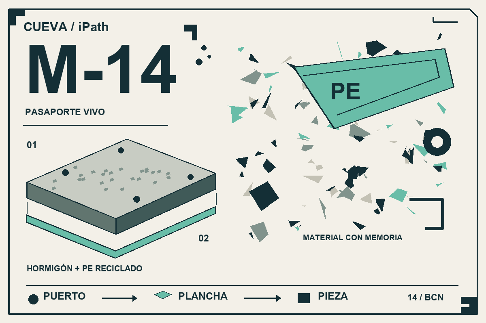

REALIDAD AUMENTADA

Apunta a la tarjeta completa. Cuando aparezca la pieza, mueve el teléfono despacio.
La imagen se procesa en tu móvil. Esta experiencia no envía vídeo a un servidor.
Ver / imprimir tarjetaEncuadra la tarjeta M-14
Modelo ilustrativo · anclado a tarjeta
La historia de M-14, sobre tu mesa.Maqueta física: 15 × 15 cm. El modelo conserva la proporción de proyecto 3 × 1,5 m; no representa un calco de la maqueta.